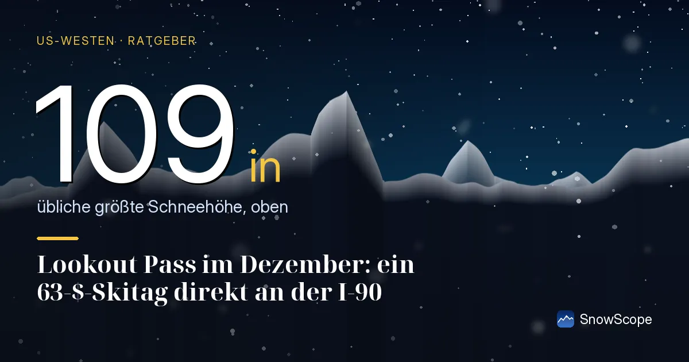

Lookout Pass im Dezember: ein 63-$-Skitag direkt an der I-90
Lookout Pass liegt direkt an der Idaho-Montana-Grenze an der I-90, mit einem Midweek-Ticket für Erwachsene zu 63 Dollar, wenn du voraus buchst. Die oberen Hänge bauen zuverlässig Schnee bis Dezember auf, aber die Talstation bleibt dünn bis nach Weihnachten.
Die Live-Schneeprognose für Lookout Pass in der SnowScope-AppSchneehöhen, Pulverschnee-Alarme und 3D-Karte, gratis.
Schnellfakten: Lage, Gelände, Ticketpreis
Lookout Pass ist ein kleiner Berg, den du von der I-90 erreichst und der zwischen Wallace, Idaho und der Missoula-Region liegt. Das kartierte Gelände reicht von 4.510 ft (1.374 m) bis 6.150 ft (1.875 m)—501 m (1.644 ft) Höhendifferenz—mit 5 Liften und ungefähr 23 Meilen (37 km) Pisten.
Für die Saison 2026-27 reservierst du dein Midweek-Ticket voraus zu 63 Dollar (oder 66 Dollar am Schalter). Wochenenden kosten 75 Dollar reserviert, 78 Dollar am Schalter. Die Feiertagszeit kostet 79 oder 82 Dollar. Keine Überraschungen: ehrliche Preisgestaltung belohnt ein wenig Planung.

Wo der Schnee im Dezember ist
Anfang Dezember ist es an der Talstation eng: typischerweise hat man am 1. Dezember 11 Zoll (29 cm), und nur 20 % der Winter erreichen bis dahin 20 Zoll (50 cm). Mittelhang (5.330 ft / 1.624 m) ist freundlicher—50 % der Winter haben 20 Zoll (50 cm) oder mehr—aber die Spitze (6.150 ft / 1.875 m) ist am besten, mit 65 % der Winter solide an diesem Datum.
Am 15. Dezember ändert sich die Geschichte. Der Mittelhang hält typischerweise 30 Zoll (75 cm), mit 85 % der Winter über 20 Zoll (50 cm). Die Spitze durchschnittlich 37 Zoll (95 cm), und 96 % der Winter bleiben über diesem Schwellenwert. Die Talstation bleibt mit 18 Zoll (45 cm) zurück, obwohl 39 % der Winter die 20-Zoll-(50-cm)-Marke erreichen.
Am Weihnachtstag erreicht die Talstation 23 Zoll (59 cm) in 61 % der Winter. Der Mittelhang erreicht 38 Zoll (97 cm) mit 93 % Zuverlässigkeit, und die Spitze steht bei 48 Zoll (122 cm) mit 96 % der Winter über 20 Zoll (50 cm). Am Silvesterabend steht der Mittelhang bei 45 Zoll (114 cm), fast sicher zum Skifahren geeignet.

Was sich in den letzten Jahrzehnten geändert hat
In den ersten 15 Wintern der Aufzeichnung (1980-81 bis 1994-95) durchschnittlich der Mittelhang am 15. Dezember 33 Zoll (84 cm) und jeder einzelne Winter überschritt 20 Zoll (50 cm). In den letzten 15 Wintern (2011-12 bis 2025-26) sank der typische Wert auf 26 Zoll (66 cm), mit 73 % der Winter, die diesen Schwellenwert überschreiten.
Letzter Winter war besonders dünn: Der Mittelhang hatte am 15. Dezember nur 13 Zoll (34 cm), obwohl es bis Weihnachten auf 22 Zoll (56 cm) kletterte. Solch frühe Dezember-Dürftigkeit ist jetzt Teil des Musters, auch wenn die Mitte bis Ende des Monats normalerweise aufgefüllt wird.
Wie es sich vergleicht: Schweitzer und Snowbowl
Schweitzer Mountain über Sandpoint hat größeres Gelände und tieferen Schnee an der Bergspitze: am 15. Dezember zeigt es typischerweise 54 Zoll (138 cm) am Gipfel gegenüber Lookouts 37 Zoll (95 cm). Aber Schweitzers Mittelhang (5.200 ft / 1.585 m) durchschnittlich 35 Zoll (90 cm) an diesem Datum—nur 5 Zoll (12 cm) mehr als Lookout. Ein Schweitzer 3er-Paket kostet 249 Dollar, oder 83 Dollar pro Tag.
Montana Snowbowl in der Nähe von Missoula berechnet 78 Dollar an Wochentagen und 85 Dollar am Wochenende. Sein Mittelhang (6.260 ft / 1.909 m) am 15. Dezember hält typischerweise 30 Zoll (76 cm)—das gleiche wie Lookouts Mittelhang. Lookouts Wochentag-Ticket zu 63 Dollar macht es um 15 Dollar pro Tag zur günstigeren Option, mit äquivalentem Mittelhang-Schnee.
Wann du gehen solltest und was du erwarten kannst
Anfang Dezember ist ein Glücksspiel: guter Schnee (definiert als ein wöchentlicher Durchschnitt von 20 Zoll / 50 cm oder mehr) erscheint in nur 30 % bis 37 % der Winter in den ersten zwei Wochen. Ende Dezember—ab dem 14.—springt dieser Anteil auf 52 % bis 65 %, was bedeutet, dass die zweite Monatshälfte viel eher liefert.
Obere Lifte sind dein Sicherheitsnetz vor Weihnachten. Die Talstation kann dünn sein, mit freiliegendem Gras oder dünner Decke, die Felsen verbirgt. Nach Weihnachten, wenn die Talstation aufgebaut wird, gewinnst du mehr Optionen. Wallace, die kleine Bergbaustadt unter dem Pass, hat Budget-Motels und Diners, wenn du in der Nähe der Lifte bleiben möchtest.
Tipps für Skifahrer
- Buche einen Wochentag voraus, um das 63-Dollar-Ticket zu sichern; Wochenenden und Feiertage kosten viel mehr.
- Fahre in der oberen Region in Dezember. Die Spitze des Berges steht am 15. Dezember in einem typischen Winter bei 37 Zoll (95 cm), während die Talstation kahl sein kann. Plane deine Abfahrten höher.
- Wenn du zwischen dem 14.-27. Dezember kommst, erscheint guter Schnee in 52-65 % der Winter am Mittelhang. Die zweite Monatshälfte ist viel zuverlässiger als die erste.
- Überprüfe den I-90-Pass-Bericht vor deiner Fahrt. Kettenanforderungen erscheinen bei Stürmen; der Pass liegt auf 4.680 ft (1.427 m) und schließt gelegentlich im Winter.
- Die letzten 15 Winter waren magerer als die ersten 15 in der Aufzeichnung: plane mit Schnee, aber überprüfe die Bedingungen in Echtzeit, bevor du buchst.
Zu diesen Zahlen
Die Schneehöhen der Skigebiete sind der meiste Schnee in den oberen Hängen am angegebenen Tag; es sind Schätzungen für eine Fläche, keine Messung an einem Punkt. Prognosen können sich ändern. Lies vor dem Freeriden immer den offiziellen Lawinenlagebericht.
Offizielle Lawinenlageberichte: avalanche.org (US national portal)
Diesen Bericht zitieren
Für Forschung, Lehre oder Presse: Zahlen und Grafiken sind unter CC BY 4.0 mit dieser Quellenangabe frei nutzbar.
SnowScope (2026), Lookout Pass im Dezember: ein 63-$-Skitag direkt an der I-90, https://snowscope.app/blog/de/2026/11/lookout-pass-december-skiing-63-dollar-midweek.html, abgerufen am 2026-11-14
SnowScope (Atlas Labs). (2026, November 14). Lookout Pass im Dezember: ein 63-$-Skitag direkt an der I-90. SnowScope snow reports. https://snowscope.app/blog/de/2026/11/lookout-pass-december-skiing-63-dollar-midweek.html
BibTeX
@misc{snowscope2026lookoutpassdecemberskiin,
author = {{SnowScope (Atlas Labs)}},
title = {Lookout Pass im Dezember: ein 63-$-Skitag direkt an der I-90},
year = {2026},
month = nov,
howpublished = {\url{https://snowscope.app/blog/de/2026/11/lookout-pass-december-skiing-63-dollar-midweek.html}},
note = {Published 2026-11-15 09:34 UTC; accessed 2026-11-14}
}· CC BY 4.0 · Methoden, Daten und Werkzeuge →
Lookout Pass: Schnee und Temperatur nach Höhe, dieser Winter vs letzter (Werkzeuge) →
Lookout Pass folgen
Gratis: eine Nachricht, wenn Neuschnee kommt, und jeden Morgen die Vorhersage.